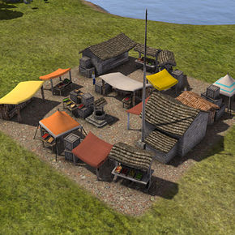

Note
Prof. Scopatz will be attending SciPy 2015! Please contact him there if interested!
Current Openings:
Past Openings:

← SHUK - Scopatz Research Group
→ Fuel Cycle Researcher (0000)
Enter search terms or a module, class or function name.